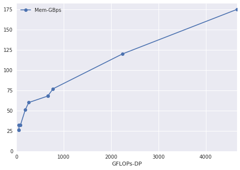
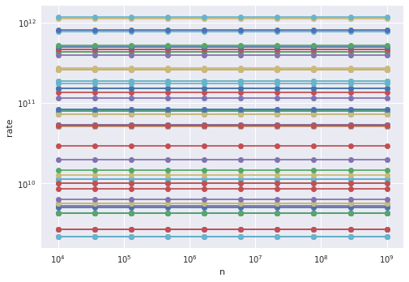
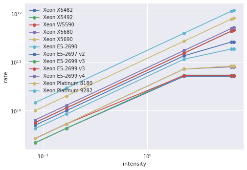

Why model performance?
Models give is a conceptual and roughly quantitative framework by which to answer the following types of questions.
- Why is an implementation exhibiting its observed performance?
- How will performance change if we:
- optimize this component?
- buy new hardware? (Which new hardware?)
- run a different configuration?
- While conceptualizing a new algorithm, what performance can we expect and what will be bottlenecks?
Models are a guide for performance, but not an absolute.
Terms
| Symbol | Meaning |
|---|---|
| $n$ | Input parameter related to problem size |
| $W$ | Amount of work to solve problem $n$ |
| $T$ | Execution time |
| $R$ | Rate at which work is done |
STREAM Triad
for (i=0; i<n; i++)
a[i] = b[i] + scalar*c[i];
$n$ is the array size and $$W = 3 \cdot \texttt{sizeof(double)} \cdot n$$ is the number of bytes transferred. The rate $R = W/T$ is measured in bytes per second (or MB/s, etc.).
Dense matrix multiplication
To perform the operation $C \gets C + A B$ where $A,B,C$ are $n\times n$ matrices.
for (i=0; i<n; i++)
for (j=0; j<n; j++)
for (k=0; k<n; k++)
c[i*n+j] += a[i*n+k] * b[k*n+j];
- Can you identify two expressions for the total amount of work $W(n)$ and the associated units?
- Can you think of a context in which one is better than the other and vice-versa?
Estimating time
To estimate time, we need to know how fast hardware executes flops and moves bytes.
%matplotlib inline
import matplotlib.pyplot as plt
import pandas
import numpy as np
plt.style.use('seaborn')
hardware = pandas.read_csv('data-intel.csv', index_col="Name")
hardware
| Year | GFLOPs-SP | GFLOPs-DP | Cores | Mem-GBps | TDP | Freq(MHz) | |
|---|---|---|---|---|---|---|---|
| Name | |||||||
| Xeon X5482 | 2007 | 102 | 51 | 4 | 26 | 150 | 3200 |
| Xeon X5492 | 2008 | 108 | 54 | 4 | 26 | 150 | 3400 |
| Xeon W5590 | 2009 | 106 | 53 | 4 | 32 | 130 | 3300 |
| Xeon X5680 | 2010 | 160 | 80 | 6 | 32 | 130 | 3300 |
| Xeon X5690 | 2011 | 166 | 83 | 6 | 32 | 130 | 3470 |
| Xeon E5-2690 | 2012 | 372 | 186 | 8 | 51 | 135 | 2900 |
| Xeon E5-2697 v2 | 2013 | 518 | 259 | 12 | 60 | 130 | 2700 |
| Xeon E5-2699 v3 | 2014 | 1324 | 662 | 18 | 68 | 145 | 2300 |
| Xeon E5-2699 v3 | 2015 | 1324 | 662 | 18 | 68 | 145 | 2300 |
| Xeon E5-2699 v4 | 2016 | 1548 | 774 | 22 | 77 | 145 | 2200 |
| Xeon Platinum 8180 | 2017 | 4480 | 2240 | 28 | 120 | 205 | 2500 |
| Xeon Platinum 9282 | 2018 | 9320 | 4660 | 56 | 175 | 400 | 2600 |
fig = hardware.plot(x='GFLOPs-DP', y='Mem-GBps', marker='o')
fig.set_xlim(left=0)
fig.set_ylim(bottom=0);

So we have rates $R_f = 4660 \cdot 10^9$ flops/second and $R_m = 175 \cdot 10^9$ bytes/second. Now we need to characterize some algorithms.
algs = pandas.read_csv('algs.csv', index_col='Name')
algs['intensity'] = algs['flops'] / algs['bytes']
algs = algs.sort_values('intensity')
algs
| bytes | flops | intensity | |
|---|---|---|---|
| Name | |||
| Triad | 24 | 2 | 0.083333 |
| SpMV | 12 | 2 | 0.166667 |
| Stencil27-cache | 24 | 54 | 2.250000 |
| MatFree-FEM | 2376 | 15228 | 6.409091 |
| Stencil27-ideal | 8 | 54 | 6.750000 |
def exec_time(machine, alg, n):
bytes = n * alg.bytes
flops = n * alg.flops
T_mem = bytes / (machine['Mem-GBps'] * 1e9)
T_flops = flops / (machine['GFLOPs-DP'] * 1e9)
return max(T_mem, T_flops)
exec_time(hardware.loc['Xeon Platinum 9282'], algs.loc['SpMV'], 1e8)
0.006857142857142857
for _, machine in hardware.iterrows():
for _, alg in algs.iterrows():
ns = np.geomspace(1e4, 1e9, 10)
times = np.array([exec_time(machine, alg, n) for n in ns])
flops = np.array([alg.flops * n for n in ns])
rates = flops/times
plt.loglog(ns, rates, 'o-')
plt.xlabel('n')
plt.ylabel('rate');

It looks like performance does not depend on problem size.
Well, yeah, we chose a model in which flops and bytes were both proportional to $n$, and our machine model has no sense of cache hierarchy or latency, so time is also proportional to $n$. We can divide through by $n$ and yield a more illuminating plot.
for _, machine in hardware.iterrows():
times = np.array([exec_time(machine, alg, 1)
for _, alg in algs.iterrows()])
rates = algs.flops/times
intensities = algs.intensity
plt.loglog(intensities, rates, 'o-', label=machine.name)
plt.xlabel('intensity')
plt.ylabel('rate')
plt.legend();

We’re seeing the “roofline” for the older processors while the newer models are memory bandwidth limited for all of these algorithms.